Projects

Design: Input a country, find out current air quality index around the country and summarized information about the country.
Skills:MySQL, NLTK, Python(sqlAlchemy, nltk, bs4, flask, pandas), JavaScript(jQuery, d3, leaflet), html, css

Keyword Finder
Design: Find out skills needed for your future job. This program scrapes all data from glassdoor corresponding to user's input and
outputs most frequently occuring words from all job descriptions that appears in the search.
Skills: Python(flask), Javascript(d3, plotly), html5, css3(bootstrap),

Earthquake Visualizer
Design: Where does earthquake occur most often and why?
find out how we can help and hopefully get some insight
on earthquake occurence patterns. Datas are updated every minute.
Skills: Javascript(GeoJSON, leaflet, d3), html5, css3(bootstrap),
 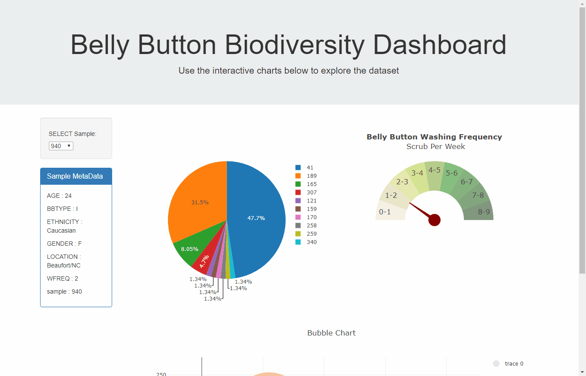
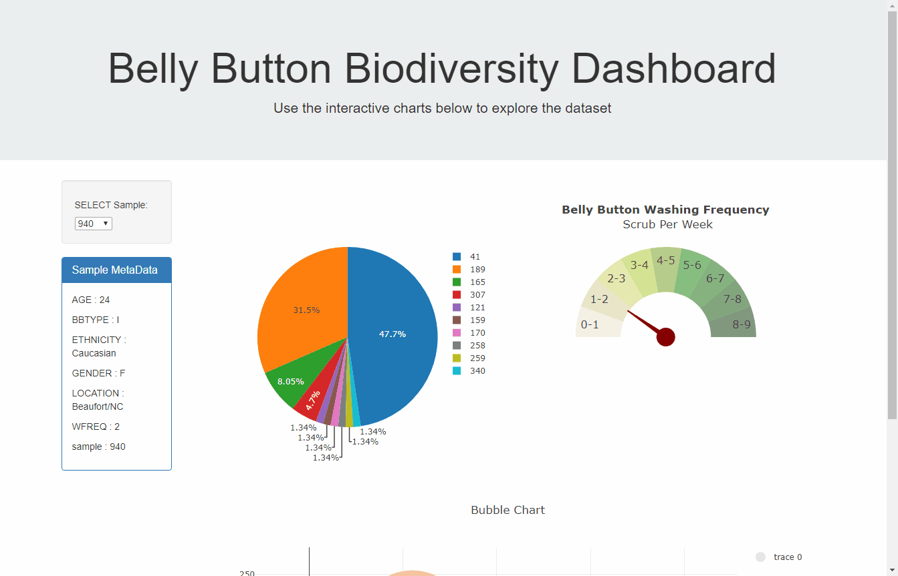
Interactive Dashboard
Design: Play with dashboard to see 1000 different sample information of their bellybutton biodiversity
Skills: Python(flask), Javascript(d3, plotly), html5, css3(bootstrap),
Data Journalism
Design: Multi-axis data visualization, play around with axis labels to see different plots.
Skills: Python(flask), Javascript(d3, plotly), html5, css3(bootstrap, keyframes)
"Sweet flowers are slow and weeds make haste"
Data Science related books
Python Machine Learning 3rd edition
Rating: 4.3/5
If you want to get deeper knowledge into machine learning, how they work mathematically in the background
this is a great book for you. It is not beginner friendly therefore I recommend you read it with another
machine learning book. I usually get grasp of the concept then read this book to get deeper understanding.
It also covers materials from Neural Networks to GAN and Reinforcement learning.
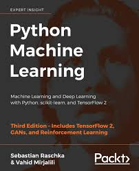
Rating: 4.3/5
If you want to get deeper knowledge into machine learning, how they work mathematically in the background this is a great book for you. It is not beginner friendly therefore I recommend you read it with another machine learning book. I usually get grasp of the concept then read this book to get deeper understanding.
It also covers materials from Neural Networks to GAN and Reinforcement learning.
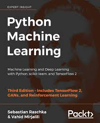데이터 분석의 힘
Rating: 4.6/5
실제 Decision making 을 할때 필요한건 인과관계(causal relationship) 이다.
결국 하나의 event(X) 가 result(Y)에게 영향을 줫느냐이다. 실제 업무에서
가장 필요한 부분이라 생각하지만 굉장히 힘든 부분이다. 이런 인과관계 분석의
힘든점들을 얘기해주고 성공할수 있도록 시도할수 있는 여러가지 방법을
아주 쉽게 설명 해주고 그들의 장점과 단점들을 잘 설명 해준다.
데이터 분석을 하는사람이라면 극추천(아닌 사람도). 심지어 쉽고 재밌어서
하루만에 끝낸 책이다.

Rating: 4.6/5
실제 Decision making 을 할때 필요한건 인과관계(causal relationship) 이다. 결국 하나의 event(X) 가 result(Y)에게 영향을 줫느냐이다. 실제 업무에서 가장 필요한 부분이라 생각하지만 굉장히 힘든 부분이다. 이런 인과관계 분석의 힘든점들을 얘기해주고 성공할수 있도록 시도할수 있는 여러가지 방법을 아주 쉽게 설명 해주고 그들의 장점과 단점들을 잘 설명 해준다.
데이터 분석을 하는사람이라면 극추천(아닌 사람도). 심지어 쉽고 재밌어서 하루만에 끝낸 책이다.
린 분석
Rating: 3.7/5
분석을 하다보면 수많은 지표들을 생성하게 되는데 자신의 회사가 현재 어느 지표에 가장 중점을
둬야할지 알려주고 그다음엔 어떤 지표에 집중해야할지 스테이지별로 잘 알려주는책.
이런책들은 실제로 시도해보지 않으면 크게 도움이 되지 않는다고 생각한다. 실제로 내 회사에는
어떻게 도입할지, 가장 중요하다 생각하는 지표(계속 스테이지별로 변할것)를 자꾸 직원들에게
노출시켜 현재 우리의 위치를 인지할수 있도록 해주어야 한다.
쉽게 읽히지는 않는책 하지만 천천히 이해하고 실행하면서 읽으면 재미있다.
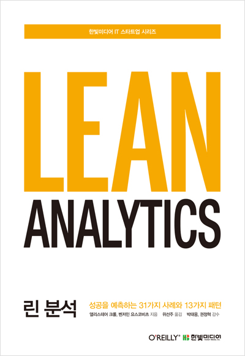
Rating: 3.7/5
분석을 하다보면 수많은 지표들을 생성하게 되는데 자신의 회사가 현재 어느 지표에 가장 중점을
둬야할지 알려주고 그다음엔 어떤 지표에 집중해야할지 스테이지별로 잘 알려주는책.
이런책들은 실제로 시도해보지 않으면 크게 도움이 되지 않는다고 생각한다. 실제로 내 회사에는
어떻게 도입할지, 가장 중요하다 생각하는 지표(계속 스테이지별로 변할것)를 자꾸 직원들에게
노출시켜 현재 우리의 위치를 인지할수 있도록 해주어야 한다.
쉽게 읽히지는 않는책 하지만 천천히 이해하고 실행하면서 읽으면 재미있다.
세상에서 가장쉬운 베이즈 통계학 입문
Rating: 3.9/5
다양한 머신러닝책을 읽었어도 베이즈 알고리즘에 대한 이해가 부족했던것 같은데 수학적인 내용을 제외하고 어떤식으로
작동하는건지 알지 정말 좋은 책이다. 항상 처음에 힘든 concept 을 공부하기전에 유투브나 쉽게 설명해주는 걸 먼저 듣고
그다음에 수학적인 부분은 커버 하는 스타일인데 이게 딱 수학적인 부분으로 들어가기전에 정말 좋은 리소스 같다.
저는 이책 읽기 전에도 statsquest, 3bluebrown 유투버(둘도 강력 추천)를 통해 베이즈 알고리즘에 설명을 들어서 이해를 하고 있었는데
이책은 더욱 머릿속 깊이 심어주는 역할을 하는것 같다.
아예 베이즈 통계학에 대해서 모르는 사람도 시작하기 정말 좋은책. 하지만 코드, 코드예제는 없고 설명만 되있다는 단점.
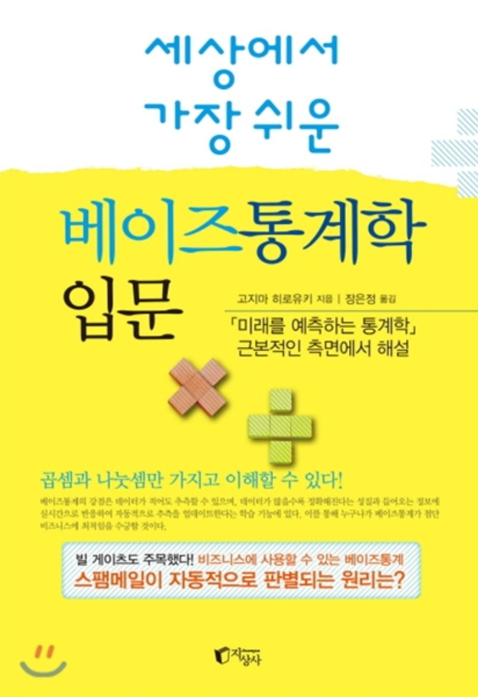
Rating: 3.9/5
다양한 머신러닝책을 읽었어도 베이즈 알고리즘에 대한 이해가 부족했던것 같은데 수학적인 내용을 제외하고 어떤식으로
작동하는건지 알지 정말 좋은 책이다. 항상 처음에 힘든 concept 을 공부하기전에 유투브나 쉽게 설명해주는 걸 먼저 듣고
그다음에 수학적인 부분은 커버 하는 스타일인데 이게 딱 수학적인 부분으로 들어가기전에 정말 좋은 리소스 같다.
저는 이책 읽기 전에도 statsquest, 3bluebrown 유투버(둘도 강력 추천)를 통해 베이즈 알고리즘에 설명을 들어서 이해를 하고 있었는데
이책은 더욱 머릿속 깊이 심어주는 역할을 하는것 같다.
아예 베이즈 통계학에 대해서 모르는 사람도 시작하기 정말 좋은책. 하지만 코드, 코드예제는 없고 설명만 되있다는 단점.
Hands-On Machine learning with Scikit-learn and TensorFlow
Rating: 3.7/5
Similar to Python data science handbook but it covers deep learning concepts as well. ML concepts are explained
at similar level as Python data science handbook therefore if you fully understood the materials I would just
skip to deep learning section. For me, I did not understand ML concepts after first read therefore this book
helped me clarifies things. Instead of reading multiple books I recommend reading one and doing some practice and
if you are unsure about how to apply or build a certain model, come back to books.
I've read the first edition, however 2nd edition came out so for those of you who are thinking of buying the book get
the latest edition since technologies are developing at fast speed therefore it is always good to make sure book you are
reading are up-to-date.
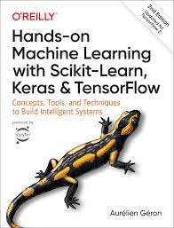
Rating: 3.7/5
Similar to Python data science handbook but it covers deep learning concepts as well. ML concepts are explained
at similar level as Python data science handbook therefore if you fully understood the materials I would just
skip to deep learning section. For me, I did not understand ML concepts after first read therefore this book
helped me clarifies things. Instead of reading multiple books I recommend reading one and doing some practice and
if you are unsure about how to apply or build a certain model, come back to books.
I've read the first edition, however 2nd edition came out so for those of you who are thinking of buying the book get
the latest edition since technologies are developing at fast speed therefore it is always good to make sure book you are
reading are up-to-date.
Python data science handbook
Rating: 4.0/5
First book I read when I started learning about machine learning and data science. It covers various ML algorithms
and it is easy to understand even without mathematical background. I recommend this book as a starting point if you
do not know anything about data science and machine learning.

Rating: 4.0/5
First book I read when I started learning about machine learning and data science. It covers various ML algorithms and it is easy to understand even without mathematical background. I recommend this book as a starting point if you do not know anything about data science and machine learning.
Head First Statistics
Rating: 3.6/5
살짝 유치할수도 있지만 아예 통계를 모르는 사람이라도 보고 이해가 될만한 간단한 예시를 통해 통계학 개념들을 설명하고 있다. 통계를 공부를 했었지만
정확히 이해가 안되서 다시보는 경우에도 궁금했던 부분만 찾아가서 기초적인 개념을 익히기 좋은것 같다.
통계를 어느정도 이해하고 있다면 너무 쉬울거 같아서 초급자한테 추천할만한 책인듯. 사진, 그림들도 많아서 도움이 되지만 책이 너무 무겁기 때문
가지고 다니면서 보기엔 힘듬. 여튼 전반적으로 이해하기 쉬웠고 처음 이거를 읽고 더욱 깊이 공부할수 있는 다른 책을 같이 보는걸 추천한다.
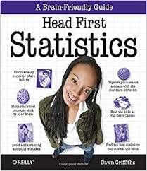
Rating: 3.6/5
살짝 유치할수도 있지만 아예 통계를 모르는 사람이라도 보고 이해가 될만한 간단한 예시를 통해 통계학 개념들을 설명하고 있다. 통계를 공부를 했었지만
정확히 이해가 안되서 다시보는 경우에도 궁금했던 부분만 찾아가서 기초적인 개념을 익히기 좋은것 같다.
통계를 어느정도 이해하고 있다면 너무 쉬울거 같아서 초급자한테 추천할만한 책인듯. 사진, 그림들도 많아서 도움이 되지만 책이 너무 무겁기 때문
가지고 다니면서 보기엔 힘듬. 여튼 전반적으로 이해하기 쉬웠고 처음 이거를 읽고 더욱 깊이 공부할수 있는 다른 책을 같이 보는걸 추천한다.
SQL로 맛보는 데이터 전처리
Rating: 3.6/5
마케팅 관련 분석을 한다면 MUST 입니다.
마케팅에서 유용하게 쓰이는 분석 기법들, 실무에 적용할수 있는것들이 아주 쉽게, 단계별로 잘 설명 되있습니다.
Churn Rate, Retention Rate, 유저 그륩 나누기(user segmentation), 코호트 분석, Life Time Value 구하기 등등
마케터라면 정말 꼭 알아야할 것들이 있습니다.
SQL 를 깊게 성능까지 고려 한다기보다 약간 마케터와 데이터 분석 사이에서 설명이 되있는것 같습니다.
다른 성능관련 깊게 들어가는 SQL 책이랑 같이보시면 최고!
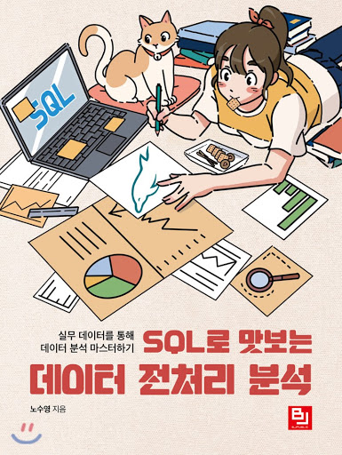
Rating: 3.6/5
마케팅 관련 분석을 한다면 MUST 입니다.
마케팅에서 유용하게 쓰이는 분석 기법들, 실무에 적용할수 있는것들이 아주 쉽게, 단계별로 잘 설명 되있습니다.
Churn Rate, Retention Rate, 유저 그륩 나누기(user segmentation), 코호트 분석, Life Time Value 구하기 등등
마케터라면 정말 꼭 알아야할 것들이 있습니다.
SQL 를 깊게 성능까지 고려 한다기보다 약간 마케터와 데이터 분석 사이에서 설명이 되있는것 같습니다.
다른 성능관련 깊게 들어가는 SQL 책이랑 같이보시면 최고!
데이터 읽기의 기술
Rating: 3.2/5
스타벅스 1호 데이터 과학자가 데이터 분석하는 사람은 어떤식으로 생각하면 좋을지 조언을 해주는 책.
개인적으로 새로운 관점도 얻게되고 이런저런 사례들도 알고 재미있게 읽은 책입니다
어떠한 질문을 던져야 하는지 아이디어를 주는책, 질문을 해결하기에 필요한 기술에 대해선 설명이 없습니다.
팀장님이나 대표님 + 비개발자 직원들 이 읽었으면 도움이 될 책 그리고 데이터 팀이 아닌 사람들이 읽었으면 하는책.
지나칠때 실수로 책을 대표님 책상에 떨어트리고 싶은책.
Rating: 3.2/5
스타벅스 1호 데이터 과학자가 데이터 분석하는 사람은 어떤식으로 생각하면 좋을지 조언을 해주는 책.
개인적으로 새로운 관점도 얻게되고 이런저런 사례들도 알고 재미있게 읽은 책입니다
어떠한 질문을 던져야 하는지 아이디어를 주는책, 질문을 해결하기에 필요한 기술에 대해선 설명이 없습니다.
팀장님이나 대표님 + 비개발자 직원들 이 읽었으면 도움이 될 책 그리고 데이터 팀이 아닌 사람들이 읽었으면 하는책. 지나칠때 실수로 책을 대표님 책상에 떨어트리고 싶은책.
Books
아몬드
Rating: 3.4/5
finished: 2021-04-17
감정을 관리하는 뇌의 amygdala(아몬드) 가 보통사람보다 작은 윤재가 살아가는 내용이다. 평범하게 살아야 사람들의 표적이
안된다는 엄마의 뜻에 따라 열심히 평범하게 살려고 노력하는 윤재, 그런 그에게 나타난 다양하고 평범하지 않은 사람들이 나타난다.
"평범함" 이란 단어 때문에 특이한 사람이란게 생기는것 같다. 모든 사람들은 제각각 이고 본연은 모습은 더더욱 그럴것이라 생각한다,
우리 모두 사람들을 있는그대로 받아드린다면 우리 사회가 조금더 다양하고 아름다운 색깔로 가득할것 같다.
물론 나부터 노력을 해야겠다.
Rating: 3.4/5
finished: 2021-04-17
감정을 관리하는 뇌의 amygdala(아몬드) 가 보통사람보다 작은 윤재가 살아가는 내용이다. 평범하게 살아야 사람들의 표적이 안된다는 엄마의 뜻에 따라 열심히 평범하게 살려고 노력하는 윤재, 그런 그에게 나타난 다양하고 평범하지 않은 사람들이 나타난다.
"평범함" 이란 단어 때문에 특이한 사람이란게 생기는것 같다. 모든 사람들은 제각각 이고 본연은 모습은 더더욱 그럴것이라 생각한다, 우리 모두 사람들을 있는그대로 받아드린다면 우리 사회가 조금더 다양하고 아름다운 색깔로 가득할것 같다. 물론 나부터 노력을 해야겠다.
우리가 빛의 속도로 갈 수 없다면
Rating: 4.0/5
finished: 2021-03-29
SF 단편소설이 모여있는책, SF인 동시에 현재시대의 문제점을 꼬집는 느낌과 과연 계속 기술과 과학이 발전한다고
유토피아에 가까워 질까 하는 질문을 하는 책.
이해도 쉽게되고 굉장히 쉽게 읽히는 책이라 가볍게 보기 좋은것 같으면서도 생각을 하게 만드는책.
오랜만에 소설을 읽어서 그런지 재미있게 읽었다, 한가지 아쉬운점은 각 스토리가 너무 짧아서 몰입 할때쯤 끝난다는점...
Rating: 4.0/5
finished: 2021-03-29
SF 단편소설이 모여있는책, SF인 동시에 현재시대의 문제점을 꼬집는 느낌과 과연 계속 기술과 과학이 발전한다고 유토피아에 가까워 질까 하는 질문을 하는 책. 이해도 쉽게되고 굉장히 쉽게 읽히는 책이라 가볍게 보기 좋은것 같으면서도 생각을 하게 만드는책.
오랜만에 소설을 읽어서 그런지 재미있게 읽었다, 한가지 아쉬운점은 각 스토리가 너무 짧아서 몰입 할때쯤 끝난다는점...
20대, 공부에 미쳐라
Rating: 3.5/5
finished: 2021-03-13
20대에 공부에 미쳐야 하는 이유와 어떤것을 어떤식으로 공부해야할지 50가지 방법을 통해 설명해준다. 2006년도 책이라 조금 올드한 면이 있지만 15년이 지났음에도 불구하고
굉장히 유익한 내용도 많았다. 쉽게 읽히고 한편한편 짧게 있기때문에 시간이 조금씩 날때 읽어도 좋을듯.
가장 좋았던 말은 "누구와도 잘어울수 있는 한마리 늑대가 돼라" 이다. 누구와도 잘어울릴수 있어서 좋은 팀워크를 발휘해 성과를 낼줄 알아야하고 또한 무리에 속하지 않으므로
보통 무리와는 다르게 새롭고 특이한 아이디어로 사람들에게 영감을 줄수 있어야 한다고 말한다.
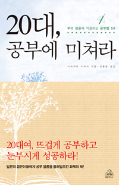
Rating: 3.5/5
finished: 2021-03-13
20대에 공부에 미쳐야 하는 이유와 어떤것을 어떤식으로 공부해야할지 50가지 방법을 통해 설명해준다. 2006년도 책이라 조금 올드한 면이 있지만 15년이 지났음에도 불구하고 굉장히 유익한 내용도 많았다. 쉽게 읽히고 한편한편 짧게 있기때문에 시간이 조금씩 날때 읽어도 좋을듯.
가장 좋았던 말은 "누구와도 잘어울수 있는 한마리 늑대가 돼라" 이다. 누구와도 잘어울릴수 있어서 좋은 팀워크를 발휘해 성과를 낼줄 알아야하고 또한 무리에 속하지 않으므로 보통 무리와는 다르게 새롭고 특이한 아이디어로 사람들에게 영감을 줄수 있어야 한다고 말한다.
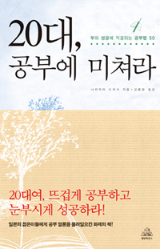연금술사
Rating: 3.6/5
finished: 2021-03-01
산티아고, 꿈에서 나온 보석을 찾아 여행을 떠나고 보석을 찾기를 간절히 원하기때문에 온 우주는 도움을 주고 막상
그 보석은 자기가 원래 있던곳에 있는걸 발견한다.
결국 자신이 세상을 어떻게 보느냐에 따라 보석을 보거나 못본다는 것으로 해석했다.
몇페이지 안되고 글씨체도 커서 굉장히 쉽게 읽히는책, 책을 읽고 다시한번 내 주변을 돌아보게 되고 감사하는 마음을 항상
가져야 겠다고 생각하게 된거 같다.
딱히 재밌게 읽지는 않았지만 나중에 다시 읽으면 또 다르게 와닿을거 같은 뭔가 여운이 남는 책.
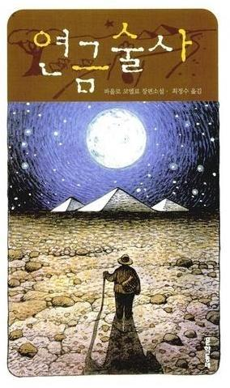
Rating: 3.6/5
finished: 2021-03-01
산티아고, 꿈에서 나온 보석을 찾아 여행을 떠나고 보석을 찾기를 간절히 원하기때문에 온 우주는 도움을 주고 막상 그 보석은 자기가 원래 있던곳에 있는걸 발견한다. 결국 자신이 세상을 어떻게 보느냐에 따라 보석을 보거나 못본다는 것으로 해석했다.
몇페이지 안되고 글씨체도 커서 굉장히 쉽게 읽히는책, 책을 읽고 다시한번 내 주변을 돌아보게 되고 감사하는 마음을 항상 가져야 겠다고 생각하게 된거 같다.
딱히 재밌게 읽지는 않았지만 나중에 다시 읽으면 또 다르게 와닿을거 같은 뭔가 여운이 남는 책.
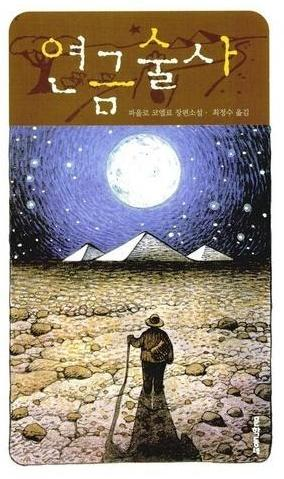We are all Greta
Rating: 3.5/5
finished: 2021-02-20
Greta Thunberg 라는 스웨덴의 한 소녀가 기후변화의 심각성과 기후변화를 늦추게 하기위해 우리가 어떻게 해야 할지
소리를 높였고 그 소리가 많은 전세계적으로 퍼지면서 많은 학생들이 "나도 greta 이다" 하면서 동참하는 일이 발생했다고 한다.
책에서는 Greta가 환경을 save 하려먼 어떻게 해야할지, 지금 에너지를 최소화 할방법, 앞으로 어떻게 연구를 해야할지 말했던것을 정리하고 덧붙여서
설명을 해준다.
책을 읽으면서 에너지를 아낄수 있는 새로운 방법들도 알게되었고 왜 환경에 관심이 많다 하면서 직접 알아보지 않고 실천 하지 않은 나를 뒤돌아 보게 되서 좋았다.
엄청 쉽게 읽히고 짧은 책이지만 충분히 우리 일상에서의 carbon footprint 를 줄일수 있는 쉬운 방법들을 알려주기에 많은사람 에게 추천!
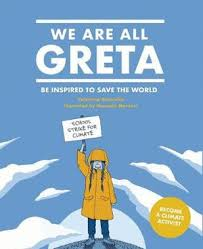
Rating: 3.5/5
finished: 2021-02-20
Greta Thunberg 라는 스웨덴의 한 소녀가 기후변화의 심각성과 기후변화를 늦추게 하기위해 우리가 어떻게 해야 할지 소리를 높였고 그 소리가 많은 전세계적으로 퍼지면서 많은 학생들이 "나도 greta 이다" 하면서 동참하는 일이 발생했다고 한다. 책에서는 Greta가 환경을 save 하려먼 어떻게 해야할지, 지금 에너지를 최소화 할방법, 앞으로 어떻게 연구를 해야할지 말했던것을 정리하고 덧붙여서 설명을 해준다.
책을 읽으면서 에너지를 아낄수 있는 새로운 방법들도 알게되었고 왜 환경에 관심이 많다 하면서 직접 알아보지 않고 실천 하지 않은 나를 뒤돌아 보게 되서 좋았다. 엄청 쉽게 읽히고 짧은 책이지만 충분히 우리 일상에서의 carbon footprint 를 줄일수 있는 쉬운 방법들을 알려주기에 많은사람 에게 추천!
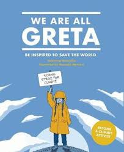일의 기쁨과 슬픔
Rating: 2.5/5
finished: 2021-02-04
여러 직장인들의 스토리를 묶어놓은것 같은 책. 실제로 일어날것 같은것들 이기에 많은 사람들이 공감이 갔다고 하는것 같다.
여러개의 스토리가 있는데 첫번째는 청첩장을 줘야할지 말아야할지 고민하고 주기 싫은 사람에게 줬는데 받은사람의 행동이
마음에 안들어서 하소연 하는 내용. 난 개인적으로 너무 계산적인게 숨막혔다... 주기 싫으면 주기 싫다고 말하던가 그럴 용기는 없고
줘놓고 왜 불평하는지... 누군가에게 무엇을 해줄때 무언가를 바라고 한다면 항상 실망하기 마련인데 내가 원해서 해주는것이고
아무것도 바라지않고 해주면 좋은것 같다 그리고 그러다보면 다른 사람들도 어느센가 당신에게 바라지 않고 무언가를 해주는것 같다.
결론은 우리 모두 너무 서로 재고, 계산하는것을 줄이고 진심으로 행동했으면 좋겠다 또한 자신이 선택해서 행동하고 불평하는 것이 아니라
조금더 긍정적으로 생각을 했으면 좋겠다.
싫으면 싫타하고 어떠한 일을 "하기로 선택" 했다면 그 선택에 대해서 불평은 안했으면 좋겟다, 그러면 꼰대 도 사라지거나 꼰대력이 줄어드는것 같다.
첫 스토리의 여자 주인공 같은 사람이라면 공감이 가고 위로가 받을만할책. 나도 공감은 못했지만 그래도
나름 재밌게 읽은것 같다, 특히 거북이알 나오는 스토리.
Rating: 2.5/5
finished: 2021-02-04
여러 직장인들의 스토리를 묶어놓은것 같은 책. 실제로 일어날것 같은것들 이기에 많은 사람들이 공감이 갔다고 하는것 같다. 여러개의 스토리가 있는데 첫번째는 청첩장을 줘야할지 말아야할지 고민하고 주기 싫은 사람에게 줬는데 받은사람의 행동이 마음에 안들어서 하소연 하는 내용. 난 개인적으로 너무 계산적인게 숨막혔다... 주기 싫으면 주기 싫다고 말하던가 그럴 용기는 없고 줘놓고 왜 불평하는지... 누군가에게 무엇을 해줄때 무언가를 바라고 한다면 항상 실망하기 마련인데 내가 원해서 해주는것이고 아무것도 바라지않고 해주면 좋은것 같다 그리고 그러다보면 다른 사람들도 어느센가 당신에게 바라지 않고 무언가를 해주는것 같다. 결론은 우리 모두 너무 서로 재고, 계산하는것을 줄이고 진심으로 행동했으면 좋겠다 또한 자신이 선택해서 행동하고 불평하는 것이 아니라 조금더 긍정적으로 생각을 했으면 좋겠다.
싫으면 싫타하고 어떠한 일을 "하기로 선택" 했다면 그 선택에 대해서 불평은 안했으면 좋겟다, 그러면 꼰대 도 사라지거나 꼰대력이 줄어드는것 같다.
첫 스토리의 여자 주인공 같은 사람이라면 공감이 가고 위로가 받을만할책. 나도 공감은 못했지만 그래도 나름 재밌게 읽은것 같다, 특히 거북이알 나오는 스토리.
Ingenius
Rating: 3.75/5
finished: 2021-02-02
Tina Seelig 는 Standford 에서 창의성을 키우기 위해 "d.school" 이라는 course를 만들었다. 책에선 자신이 학생들의 창의성을 키워주기 위해 사용한 방법들과
Creativity 를 발전시킬수 있는 "Innovation Engine" 에 대해 실제 예시를 통해 설명해준다. Innovation Engine 은 내부와 외부 파트가 있는데 내부에는
Attitude, Knowledge, Imagination 이 있고 외부에는 Resources, Culture, Habitat 이 있다, 이것들이 모두 상호작용을 하여 Innovation Engine 이 완성되고
이것이 완성되면 Creativity 가 발전된다는 내용.
어떤일에든 Attitude 가 시작을 시켜주는것 같다, 어떤 complex 한 문제를 받았을때 무조건 할수있다는 Attitude 를 가지면
그에대한 Knowledge를 쌓게해주고 그것들이 새로운 Imagination을 만들게 되는거 같다. 긍정적인 태도를 유지하고 실패도 경험이라고
생각하는 태도가 이책 뿐만 아니라 "lean analytics" 이나 "후츠파" 등등 다른 많은 자기계발 책들이 항상 중요하다고 말하는 내용인듯. 또한
많은 Attitude들이 쌓여 Culture가 생성되고, Knowledge가 새로운 Resources 에 접근할수 있게 해주고, Habitat가 Imagination 에 영향을 준다고
책에선 얘기한다 (외부와 내부가 상호작용 하는것).
현재 질문/생각 방식에 질문을 하게 되는책이여서 신선했던거 같고 많은 생각을 하게된책, 하지만 결국 실행을 안하면 모르는것만 못하니 여기서 배운 방식을
실제 적용해보록.
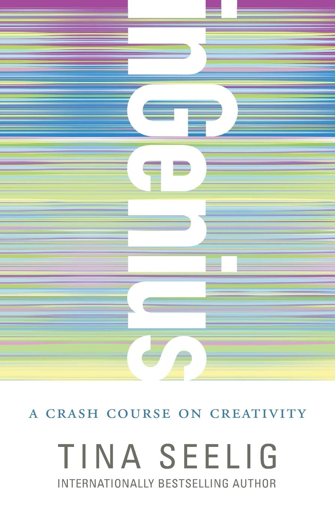
Rating: 3.75/5
finished: 2021-02-02
Tina Seelig 는 Standford 에서 창의성을 키우기 위해 "d.school" 이라는 course를 만들었다. 책에선 자신이 학생들의 창의성을 키워주기 위해 사용한 방법들과 Creativity 를 발전시킬수 있는 "Innovation Engine" 에 대해 실제 예시를 통해 설명해준다. Innovation Engine 은 내부와 외부 파트가 있는데 내부에는 Attitude, Knowledge, Imagination 이 있고 외부에는 Resources, Culture, Habitat 이 있다, 이것들이 모두 상호작용을 하여 Innovation Engine 이 완성되고 이것이 완성되면 Creativity 가 발전된다는 내용.
어떤일에든 Attitude 가 시작을 시켜주는것 같다, 어떤 complex 한 문제를 받았을때 무조건 할수있다는 Attitude 를 가지면 그에대한 Knowledge를 쌓게해주고 그것들이 새로운 Imagination을 만들게 되는거 같다. 긍정적인 태도를 유지하고 실패도 경험이라고 생각하는 태도가 이책 뿐만 아니라 "lean analytics" 이나 "후츠파" 등등 다른 많은 자기계발 책들이 항상 중요하다고 말하는 내용인듯. 또한 많은 Attitude들이 쌓여 Culture가 생성되고, Knowledge가 새로운 Resources 에 접근할수 있게 해주고, Habitat가 Imagination 에 영향을 준다고 책에선 얘기한다 (외부와 내부가 상호작용 하는것).
현재 질문/생각 방식에 질문을 하게 되는책이여서 신선했던거 같고 많은 생각을 하게된책, 하지만 결국 실행을 안하면 모르는것만 못하니 여기서 배운 방식을 실제 적용해보록.
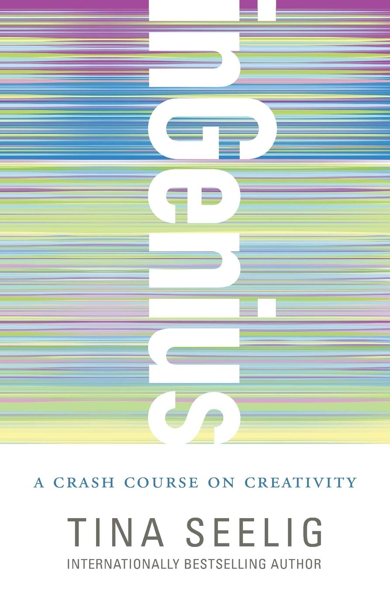How to win friends and Influence people
Rating: 3.5/5
finished: 2021-01-10
책의 제목 그대로 어떻게 사람들이 자신을 좋아하게 만드는지에 관한책이다, 대부분 예시는
회사생활에서 일어난 일이지만 어떤 상황에도 사람과 interaction 이 있다면 정말 필요한 것들로 가득 차 있다.
책에서 누군가가 무엇을 해주길 원한다면 "너가 날 위해 이랬으면 좋겠어" 보다 어떻게 그사람이 자신이 원해서
할수 있도록 만들지에 집중하라고 말한다. 이 말이 참 와닿았는데 이유는 우리가 살아가면서 누구를 위한다고 한다는 것들이
과연 정말 그사람의 관점에서 보고 행동한걸까? 라는 생각을 하게된다 그리고 앞으로는 더더욱 도움 주고 싶은 사람의 관점으로
보도록 노력 해야 겠다고 생각 들었다.
이책이 나중에 나의 커리어가 쌓여서 사람들을 매니지 할때 굉장히 유용할것 이라고 생각한다. 그리고
자기계발 책들을 많이 읽는것보단 실행 하는것이 중요하다고 생각한다. 내 블로그를 누가 볼지 모르겠지만...
책을 읽게된다면 꼭! 힘들더라도 실행에 옮기길 바란다.
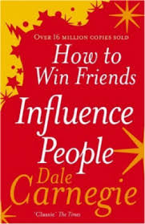
Rating: 3.5/5
finished: 2021-01-10
책의 제목 그대로 어떻게 사람들이 자신을 좋아하게 만드는지에 관한책이다, 대부분 예시는 회사생활에서 일어난 일이지만 어떤 상황에도 사람과 interaction 이 있다면 정말 필요한 것들로 가득 차 있다.
책에서 누군가가 무엇을 해주길 원한다면 "너가 날 위해 이랬으면 좋겠어" 보다 어떻게 그사람이 자신이 원해서 할수 있도록 만들지에 집중하라고 말한다. 이 말이 참 와닿았는데 이유는 우리가 살아가면서 누구를 위한다고 한다는 것들이 과연 정말 그사람의 관점에서 보고 행동한걸까? 라는 생각을 하게된다 그리고 앞으로는 더더욱 도움 주고 싶은 사람의 관점으로 보도록 노력 해야 겠다고 생각 들었다.
이책이 나중에 나의 커리어가 쌓여서 사람들을 매니지 할때 굉장히 유용할것 이라고 생각한다. 그리고 자기계발 책들을 많이 읽는것보단 실행 하는것이 중요하다고 생각한다. 내 블로그를 누가 볼지 모르겠지만... 책을 읽게된다면 꼭! 힘들더라도 실행에 옮기길 바란다.
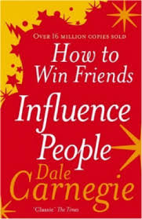Normal People
Rating: 2.8/5
finished: 2020-12-01
Ireland 의 평범한 두 학생이 가벼운 만남을 시작하고 그 만남이 on and off 돼고 그 와중에 서로에게 서로가
잘맞는다는걸 알아차리지만 이미 늦어버려 서로 갈길을 가는 내용. 읽을때는 꽤 재밌게 읽은거 같은데 딱히 읽은후에
감흥은 없었던듯...
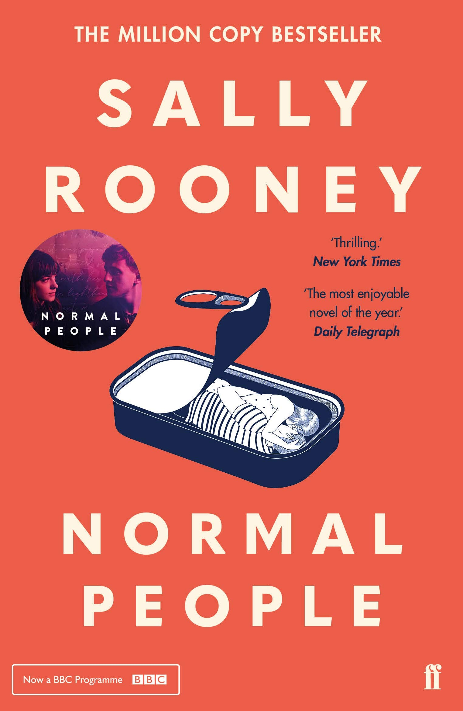
Rating: 2.8/5
finished: 2020-12-01
Ireland 의 평범한 두 학생이 가벼운 만남을 시작하고 그 만남이 on and off 돼고 그 와중에 서로에게 서로가 잘맞는다는걸 알아차리지만 이미 늦어버려 서로 갈길을 가는 내용. 읽을때는 꽤 재밌게 읽은거 같은데 딱히 읽은후에 감흥은 없었던듯...
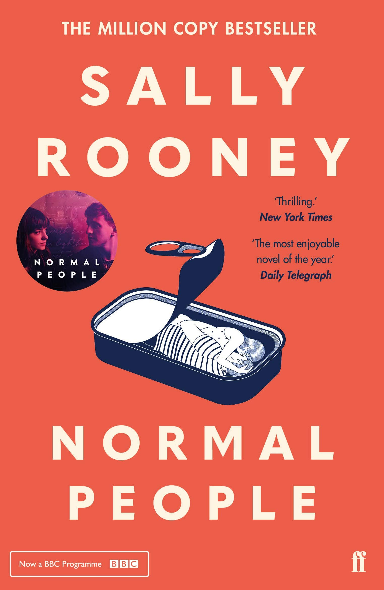에고라는 적
Rating: 3.2/5
finished: 2020-11-08
내가 심리학을 전공하다가 수학을 공부하게된 이유가 심리학자마다 얘기하는게 다르다는 거였다, 결국
답이 없어 보였다. 이 책이 말하고자 하는게 명확하지 않은거 같다.
책에선 말하는 에고란, "내가 최고다",
"나는 될놈이다" 이런 생각들이라고 하는것 같고 그것을 버려야 한다고 한다 또한 열정이
독이되고 냉철해야 한다고 한다 (내가 이해한바론). 또 과거의 인물들을 예를들어 말을했는데
열정때문에 실패한 사례들을 많이 말해줬다 근데 열정때문에 성공한 사람들은...? 과연 비율로 봣을땐
더 많나?...
여튼 조금 내가 생각하는 삶이랑 맞지않아서 곰곰히 생각을 해보게 되긴 했다. 하지만 인생에 대해선
누구의 말도 옳은게 없다고 생각한다, 행복의 정의, 성공의 정의도 다 다르기때문.
그래도 늘 겸손해야 한다는것과 익숙함에 속아 "나는 더 나은곳에 가야할 사람이야" 라는 생각에 빠져
현재에 감사하지 못하고 떠나버리는 실수를 하면 안된다는것은 다시 한번 마음에 새기게 되서 좋았다.
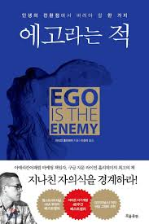
Rating: 3.2/5
finished: 2020-11-08
내가 심리학을 전공하다가 수학을 공부하게된 이유가 심리학자마다 얘기하는게 다르다는 거였다, 결국 답이 없어 보였다. 이 책이 말하고자 하는게 명확하지 않은거 같다.
책에선 말하는 에고란, "내가 최고다", "나는 될놈이다" 이런 생각들이라고 하는것 같고 그것을 버려야 한다고 한다 또한 열정이 독이되고 냉철해야 한다고 한다 (내가 이해한바론). 또 과거의 인물들을 예를들어 말을했는데 열정때문에 실패한 사례들을 많이 말해줬다 근데 열정때문에 성공한 사람들은...? 과연 비율로 봣을땐 더 많나?...
여튼 조금 내가 생각하는 삶이랑 맞지않아서 곰곰히 생각을 해보게 되긴 했다. 하지만 인생에 대해선 누구의 말도 옳은게 없다고 생각한다, 행복의 정의, 성공의 정의도 다 다르기때문. 그래도 늘 겸손해야 한다는것과 익숙함에 속아 "나는 더 나은곳에 가야할 사람이야" 라는 생각에 빠져 현재에 감사하지 못하고 떠나버리는 실수를 하면 안된다는것은 다시 한번 마음에 새기게 되서 좋았다.
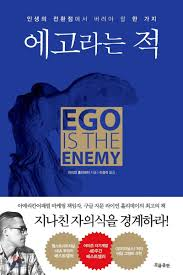The Old Man and the Sea
Rating: 3.3/5
finished: 2020-10-23
초등학생때 미국 플로리다주 키웨스트에 가서 해밍웨이의 집/박물관에 갔었는데 그때가 생각나서
갑자기 읽어봐야겠다 생각을 했다. 80세 할아버지, 어부 산티아고는 오랫동안 물고기를 못잡았엇는데
그러던 어느날 아주 멀리 나가 거대한 물고기를 잡는다. 처음에는 크기를 몰랐으나 알고보니 자신의 배보다
컷던것, 그래서 잡은후 배 옆에 달고 집으로 돌아가는동안 온갓 곤경에 처한다. 여기서 나는 두가지를 배웠는데 첫째,
원하는게 있으면 결과가 보이지 않더라도 최선을다해 행할것. 두번째, 원하는걸 이루더라도 주변을 돌아볼줄 알아야 한다.
어디에든 trade-off 는 있다고 생각한다, 이루고 싶은것에만 매진하다 보면 주변을 못보기 마련이고 주변을 신경쓰면서
이루고 싶은것을 하기엔 최고가 되기 힘든것 같다. 자신이 가치를 어디에 더 두는지 생각하고 알아서 밸런스를 맞춰가며
행복하게 살아가길. 이책은 내 인생의 stage 마다 읽으면 다르게 해석될것 같다.
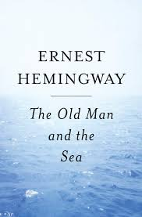
Rating: 3.3/5
finished: 2020-10-23
초등학생때 미국 플로리다주 키웨스트에 가서 해밍웨이의 집/박물관에 갔었는데 그때가 생각나서 갑자기 읽어봐야겠다 생각을 했다. 80세 할아버지, 어부 산티아고는 오랫동안 물고기를 못잡았엇는데 그러던 어느날 아주 멀리 나가 거대한 물고기를 잡는다. 처음에는 크기를 몰랐으나 알고보니 자신의 배보다 컷던것, 그래서 잡은후 배 옆에 달고 집으로 돌아가는동안 온갓 곤경에 처한다. 여기서 나는 두가지를 배웠는데 첫째, 원하는게 있으면 결과가 보이지 않더라도 최선을다해 행할것. 두번째, 원하는걸 이루더라도 주변을 돌아볼줄 알아야 한다.
어디에든 trade-off 는 있다고 생각한다, 이루고 싶은것에만 매진하다 보면 주변을 못보기 마련이고 주변을 신경쓰면서 이루고 싶은것을 하기엔 최고가 되기 힘든것 같다. 자신이 가치를 어디에 더 두는지 생각하고 알아서 밸런스를 맞춰가며 행복하게 살아가길. 이책은 내 인생의 stage 마다 읽으면 다르게 해석될것 같다.
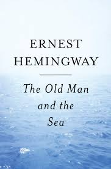4월의 어느맑은아침에 100퍼센트의 여자를 만나는것에 대하여
Rating: 1/5
finished: 2020-10-07
여러개의 짧은 소설들로 이루어져 있는책. 동물이 말을하고, 흡혈귀 택시운전사가 있고 많은 각 소설마다
세계가 존재한다. 이해한다기보다 다르단걸 받아들이는것을 노력해야 겠다 이책뿐만 아니라 평상시에도.
요즘 아주 이성적이라 잘 맞지 않았던책, 힘든여정있다.
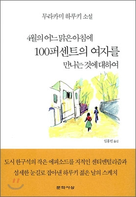
Rating: 1/5
finished: 2020-10-07
여러개의 짧은 소설들로 이루어져 있는책. 동물이 말을하고, 흡혈귀 택시운전사가 있고 많은 각 소설마다
세계가 존재한다. 이해한다기보다 다르단걸 받아들이는것을 노력해야 겠다 이책뿐만 아니라 평상시에도.
요즘 아주 이성적이라 잘 맞지 않았던책, 힘든여정있다.
예쁜 것은 다 너를 닮았다
Rating: 4.1/5
finished: 2020-08-18
오랜만에 읽기 쉬운 책을 들어서인지 코로나때문에 여행을 못간 터인지 혹은 실제로 내가
볼리비아 여행중 만난 일행이여서 그런지 글귀 하나하나가 따듯했다.
여행에세이를 그닥 좋아하지 않는편이지만 잠시 쉬어갈때 읽기 좋은책인것 같다. 개인적으로 작가님의
표현이 너무 좋아서 다른 책도 내주셨으면 생각하면서 본 책이다. (전에 데미안 읽은게 한건 했을수도...)
Rating: 4.1/5
finished: 2020-08-18
오랜만에 읽기 쉬운 책을 들어서인지 코로나때문에 여행을 못간 터인지 혹은 실제로 내가
볼리비아 여행중 만난 일행이여서 그런지 글귀 하나하나가 따듯했다.
여행에세이를 그닥 좋아하지 않는편이지만 잠시 쉬어갈때 읽기 좋은책인것 같다. 개인적으로 작가님의
표현이 너무 좋아서 다른 책도 내주셨으면 생각하면서 본 책이다. (전에 데미안 읽은게 한건 했을수도...)
데미안
Rating: 1.9/5
finished: 2020-08-16
내용을 정확히 파악 하지 못해서 그런지 쉽게 읽히지지 않았던 소설. 아직도 무슨 어떤 의도로
쓴지 잘 이해가 잘 되지 않지만 나중에 다시한번 읽게 된다면 나의 평점이 바뀔수도?
Rating: 1.9/5
finished: 2020-08-16
내용을 정확히 파악 하지 못해서 그런지 쉽게 읽히지지 않았던 소설. 아직도 무슨 어떤 의도로 쓴지 잘 이해가 잘 되지 않지만 나중에 다시한번 읽게 된다면 나의 평점이 바뀔수도?
몽테뉴의 수상록
Rating: 3.6/5
finished: 2020-08-01
몽테뉴가 인생에 대한 통찰을 나누는 책.
'소크라테스는 그에 대해 사람들이 험담을 했다고 하자 "그 들이 하는 이야기중에 나는 없소." 라고 말했다. 나의 경우에도
나를 좋은 지도자이며 겸손하고 정숙하다고 칭송하는 사람들에게 고마운 마음을 갖지도 않을 뿐더러 나를 도적이자 반역자,
술꾼이라고 말하는 자들에게도 전혀 불쾌감을 느끼지 않는다.'
가장 와닿은 문장. 칭찬이던 비난이던 내가 아닌 다른사람에게 오는걸로 슬퍼할일 없다 그사람들이 나를 제대로 모르는 것뿐.
가장 중요한건 내가 나 자신을 칭찬할수 있도록 노력하며 인생을 살아가는것.
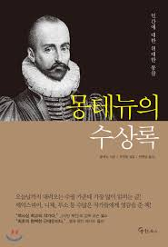
Rating: 3.6/5
finished: 2020-08-01
몽테뉴가 인생에 대한 통찰을 나누는 책.
'소크라테스는 그에 대해 사람들이 험담을 했다고 하자 "그 들이 하는 이야기중에 나는 없소." 라고 말했다. 나의 경우에도
나를 좋은 지도자이며 겸손하고 정숙하다고 칭송하는 사람들에게 고마운 마음을 갖지도 않을 뿐더러 나를 도적이자 반역자,
술꾼이라고 말하는 자들에게도 전혀 불쾌감을 느끼지 않는다.'
가장 와닿은 문장. 칭찬이던 비난이던 내가 아닌 다른사람에게 오는걸로 슬퍼할일 없다 그사람들이 나를 제대로 모르는 것뿐.
가장 중요한건 내가 나 자신을 칭찬할수 있도록 노력하며 인생을 살아가는것.
나는 자주 죽고 싶었고, 정말 가끔 살고 싶었다.
Rating: 3.6/5
finished: 2020-07-05
번역이 되면서 자극적인 제목으로 바뀐거 같다. 조현벙에 걸렸던 심리학자가 많은 사람이 평생 품고 살아야
한다고 병을 가지고 사는법을 배워야 한다고 했을때 끝까지 포기를 안한 가족과 함께 조현병을 이겨내고
현재 심리학자가 됬다.
정신질환 환자의 말도 들어보니 그저 이해받고 싶어하고 환자를 가지고 있는
정신질환으로 정의 하는게 아니라 그사람이 어떤사람인지 정말 이해하려 하고 노력해야된다는 사실을
다시 한번 되새긴다.
요즘 차별에 관한 이슈가 많은데 인종이던 성별이던 질병이던 그걸로 정의를 내리는게 아니라
그냥 그사람 자체를 보고 존중해줘야 되는것 같다. 나도 그렇고 모두들 그러기 위해 노력하는 사회가 되길
바라게 해주는 책이였다.
Rating: 3.6/5
finished: 2020-07-05
번역이 되면서 자극적인 제목으로 바뀐거 같다. 조현벙에 걸렸던 심리학자가 많은 사람이 평생 품고 살아야
한다고 병을 가지고 사는법을 배워야 한다고 했을때 끝까지 포기를 안한 가족과 함께 조현병을 이겨내고
현재 심리학자가 됬다.
정신질환 환자의 말도 들어보니 그저 이해받고 싶어하고 환자를 가지고 있는
정신질환으로 정의 하는게 아니라 그사람이 어떤사람인지 정말 이해하려 하고 노력해야된다는 사실을
다시 한번 되새긴다.
요즘 차별에 관한 이슈가 많은데 인종이던 성별이던 질병이던 그걸로 정의를 내리는게 아니라
그냥 그사람 자체를 보고 존중해줘야 되는것 같다. 나도 그렇고 모두들 그러기 위해 노력하는 사회가 되길
바라게 해주는 책이였다.
렌트 콜렉터
Rating: 4.0/5
finished: 2020-05-15
책 끝내는 시간이 느려진 느낌적인 느낌? 오노우!
작가의 아들의 다큐멘터리 영화 "승리의 강" 을 보고 영감을 받아서 썻다고 한다. 거기에 나오는 사람들의 성격, 환경 등등 을 반영하고
만약 거기 사람들이 문학을 배우면 어떻게 삶이 달라질가하는 내용의 소설입니다.
캄보디아의 쓰레기 매립장에 사는 한 가족이 살아가는 이야기입니다.
책이 엄청 술술 읽히고 중간중간 나오는 문학 스토리가 참 재미있는거 같아요.
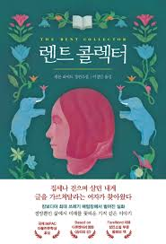
Rating: 4.0/5
finished: 2020-05-15
책 끝내는 시간이 느려진 느낌적인 느낌? 오노우!
작가의 아들의 다큐멘터리 영화 "승리의 강" 을 보고 영감을 받아서 썻다고 한다. 거기에 나오는 사람들의 성격, 환경 등등 을 반영하고
만약 거기 사람들이 문학을 배우면 어떻게 삶이 달라질가하는 내용의 소설입니다.
캄보디아의 쓰레기 매립장에 사는 한 가족이 살아가는 이야기입니다.
책이 엄청 술술 읽히고 중간중간 나오는 문학 스토리가 참 재미있는거 같아요.
해번의 카프카
Rating: 3.4/5
finished: 2020-04-26
하루키의 책은 감성적인거같네요 (노르웨이숲 하나 읽은건 비밀). 15살의 소년이 가출하여 이리저리 방황하며
삶의 살아가는 내용인데 그 소년의 내면을 잘 보여주는 스토리들로 책을 풀어나가네요.
총 2편으로 구성되있는데 스토리가 왔다갔다하다 점점 둘이 가까워지는 형태로 흘러가는데요 처음에는
이해가 잘 안되다가 읽다보면 "헐?? 대박" 이러면서 재미가 있어지네요.
조금 삶에대해 방황하고 감성적일떄 읽으면 좋을것 같은 생각이 들었습니다. 저는 개인적으로 요즘
아주 이성적이라 크게 감흥은 없었네요 나중에 감성적일때 한번 다시 읽어보면 색다를거 같아요.
Rating: 3.4/5
finished: 2020-04-26
하루키의 책은 감성적인거같네요 (노르웨이숲 하나 읽은건 비밀). 15살의 소년이 가출하여 이리저리 방황하며
삶의 살아가는 내용인데 그 소년의 내면을 잘 보여주는 스토리들로 책을 풀어나가네요.
총 2편으로 구성되있는데 스토리가 왔다갔다하다 점점 둘이 가까워지는 형태로 흘러가는데요 처음에는
이해가 잘 안되다가 읽다보면 "헐?? 대박" 이러면서 재미가 있어지네요.
조금 삶에대해 방황하고 감성적일떄 읽으면 좋을것 같은 생각이 들었습니다. 저는 개인적으로 요즘
아주 이성적이라 크게 감흥은 없었네요 나중에 감성적일때 한번 다시 읽어보면 색다를거 같아요.
어떻게 능력을 보여줄 것인가
Rating: 2.1/5
finished: 2020-04-01
행동, 말투, 겉모슽 등등 으로 어떻게 사람들에게 더욱 지적이고, 매력적인 모습을 보여줄수 있는지에 대한 내용,
이런저런 실험을 통해서 이야기의 힘을 더한다.
맨 처음 나오는 바이올리니스트에 대한 실험부터 나는 실험이 과연 모든 noise 를 제거했는지 실험자체에 의심이 갔고
한번의 실험으로 결론을 짓는다는건 말도 안된다 생각했다. 책에서 나온것처럼 처음의 이런 부정적인 반응때문에 후광효과를
일으켜서 다음 내용들도 안좋게 봤을수 있다.
전체적으로 설명이 부족하고, 겉모습만 신경쓰는 느낌? 사람을 속이라는 느낌? 을 주는 책이여서 내가 믿는 세상을 살아가는
방식과는 맞지 않았다 그래도 몇개의 기술들은 나름 납득이 됬고 실생활에도 쉽게 사용할수 있는것 같다.
책, 연구에 나온 이야기라고 무조건 믿는건 안좋은것같다 읽더라도 스스로 충분히 생각하고 맞는지 확인하는것이 중요하다.
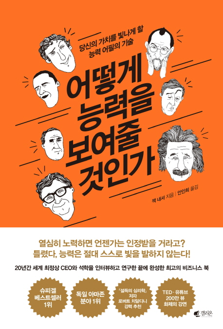
Rating: 2.1/5
finished: 2020-04-01
행동, 말투, 겉모슽 등등 으로 어떻게 사람들에게 더욱 지적이고, 매력적인 모습을 보여줄수 있는지에 대한 내용,
이런저런 실험을 통해서 이야기의 힘을 더한다.
맨 처음 나오는 바이올리니스트에 대한 실험부터 나는 실험이 과연 모든 noise 를 제거했는지 실험자체에 의심이 갔고
한번의 실험으로 결론을 짓는다는건 말도 안된다 생각했다. 책에서 나온것처럼 처음의 이런 부정적인 반응때문에 후광효과를
일으켜서 다음 내용들도 안좋게 봤을수 있다.
전체적으로 설명이 부족하고, 겉모습만 신경쓰는 느낌? 사람을 속이라는 느낌? 을 주는 책이여서 내가 믿는 세상을 살아가는
방식과는 맞지 않았다 그래도 몇개의 기술들은 나름 납득이 됬고 실생활에도 쉽게 사용할수 있는것 같다.
책, 연구에 나온 이야기라고 무조건 믿는건 안좋은것같다 읽더라도 스스로 충분히 생각하고 맞는지 확인하는것이 중요하다.
Moonwalking with Einstein
Rating: 3.9/5
finished: 2020-03-21
Author becomes memory expert in a year and wins memory championship in United States of America,
tells us that anyone can become one with
deliberate practice and right technique.
There are many fascinating memory tricks along the way that actually seems to work (Tried it).
Author meets memory experts around the world and tells their stories as well as his own while
he is training his memory.
Very interesting book with great memory techniques.
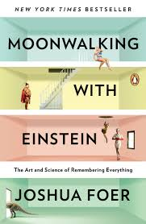
Rating: 3.9/5
finished: 2020-03-21
Author becomes memory expert in a year and wins memory championship in United States of America,
tells us that anyone can become one with
deliberate practice and right technique.
There are many fascinating memory tricks along the way that actually seems to work (Tried it).
Author meets memory experts around the world and tells their stories as well as his own while
he is training his memory.
Very interesting book with great memory techniques.
Grit
Rating: 3.7/5
Grit = passion + endurance. Angela duckworth interviews most successful figure around
the world in pursuit of figuring out what characteristics helped them succeed and figure out
that all those figures were the Grittiest.
Reading self-improvement books consecutively is quite boring as most of them get to same point.
But whenever you feel burnt out, un-motivated, or not sure if you are walking in the right path I
recommend this book.
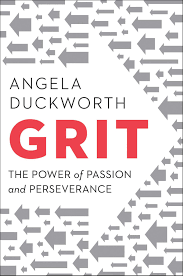
Rating: 3.7/5
Grit = passion + endurance. Angela duckworth interviews most successful figure around
the world in pursuit of figuring out what characteristics helped them succeed and figure out
that all those figures were the Grittiest.
Reading self-improvement books consecutively is quite boring as most of them get to same point.
But whenever you feel burnt out, un-motivated, or not sure if you are walking in the right path I
recommend this book.
노르웨이의 숲
Rating: 3.9/5
뭔가 여운이 많이 남는책. 불안정한 정신세계와 안정된 정신세계의 중간에 있는 주인공. 자기가 예전에
그랬다는걸 회상하는 내용.
뭔가 나이가 들면서 소신이 강해지는 순간에 이것저것 뭐가 맞는건지 모를때인 사람들이 읽으면 뭔가
위로 받을것 같다는 생각?
야한 장면이 너무 많아서 뭔가 했는데 나중에 해석도 찾아보고 하니까 왜이렇게 많이 넣었는지 이해는 간다.

Rating: 3.9/5
뭔가 여운이 많이 남는책. 불안정한 정신세계와 안정된 정신세계의 중간에 있는 주인공. 자기가 예전에
그랬다는걸 회상하는 내용.
뭔가 나이가 들면서 소신이 강해지는 순간에 이것저것 뭐가 맞는건지 모를때인 사람들이 읽으면 뭔가
위로 받을것 같다는 생각?
야한 장면이 너무 많아서 뭔가 했는데 나중에 해석도 찾아보고 하니까 왜이렇게 많이 넣었는지 이해는 간다.
나의 아름다운 고독
Rating: 4.5/5
나의 조국 캐나다 바로 북서쪽에 있는 알레스카 야생에서 살아남는 이야기. 가재가 노래하는 곳 이랑
비슷한 감성인데 개인적으로 이 책을 더 재밌게 본것 같다.
아빠의 학대 있음에도 불구하고 떠나가지 못하는 엄마랑 알레스카로 이사가게되고 아빠는 겨울이되면 이상해지고
더욱 학대가 심해지는데... 사랑하는 사람도 찾고 살아남는 이야기.
우울하거나 감성적이고 싶을때 보기 좋은책.
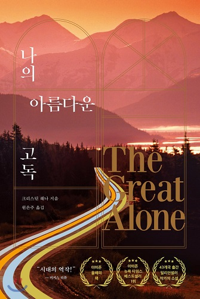
Rating: 4.5/5
나의 조국 캐나다 바로 북서쪽에 있는 알레스카 야생에서 살아남는 이야기. 가재가 노래하는 곳 이랑
비슷한 감성인데 개인적으로 이 책을 더 재밌게 본것 같다.
아빠의 학대 있음에도 불구하고 떠나가지 못하는 엄마랑 알레스카로 이사가게되고 아빠는 겨울이되면 이상해지고
더욱 학대가 심해지는데... 사랑하는 사람도 찾고 살아남는 이야기.
우울하거나 감성적이고 싶을때 보기 좋은책.
가재가 노래하는 곳
Rating: 4.1/5
델리아 오언스 저자. 오랜시간동안 야생동물을 연구하느라 외로운 생활을 하면서
쓴 외로움의 대한 책.
숲속에 사는 가족중 카야라는 여자주인공이 가족들이 떠나가면서 혼자 마을사람들의
안좋은 시선과 괴롭힘? 을 받으면서 살아가는 내용이다.
중간중간 재밌는 생태학적인 정보도 주고 아주 재밌게 봤던 책.
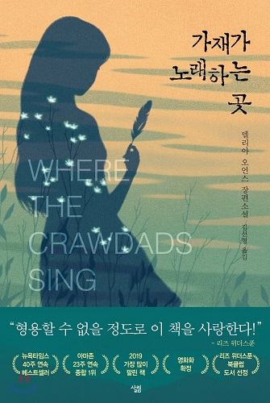
Rating: 4.1/5
델리아 오언스 저자. 오랜시간동안 야생동물을 연구하느라 외로운 생활을 하면서
쓴 외로움의 대한 책.
숲속에 사는 가족중 카야라는 여자주인공이 가족들이 떠나가면서 혼자 마을사람들의
안좋은 시선과 괴롭힘? 을 받으면서 살아가는 내용이다.
중간중간 재밌는 생태학적인 정보도 주고 아주 재밌게 봤던 책.
영원히 살것처럼 배우고 내일 죽을것 처럼 살아라
Rating: 3.7/5
책을 정말 많이 읽고 노벨상도 가장 많이 수상하는것으로 알려져있는 유대인.
그들이 배움에 대해 어떻게 생각하고 어떻게 자녀들에게 가르치는지에 대해 말해주는 책.
처음에는 "책 덮을까?" 고민했지만 워낙 쉽게쉽게 읽을수 있고 가면 갈수록 나름 볼만 하다.
일단 책의 제목이 너무 좋아서 저 문장만 평생 마음에 새기면서 실천해도 충분히 성공할것이라 생각한다.
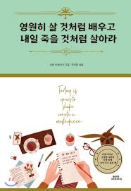
Rating: 3.7/5
책을 정말 많이 읽고 노벨상도 가장 많이 수상하는것으로 알려져있는 유대인.
그들이 배움에 대해 어떻게 생각하고 어떻게 자녀들에게 가르치는지에 대해 말해주는 책.
처음에는 "책 덮을까?" 고민했지만 워낙 쉽게쉽게 읽을수 있고 가면 갈수록 나름 볼만 하다.
일단 책의 제목이 너무 좋아서 저 문장만 평생 마음에 새기면서 실천해도 충분히 성공할것이라 생각한다.